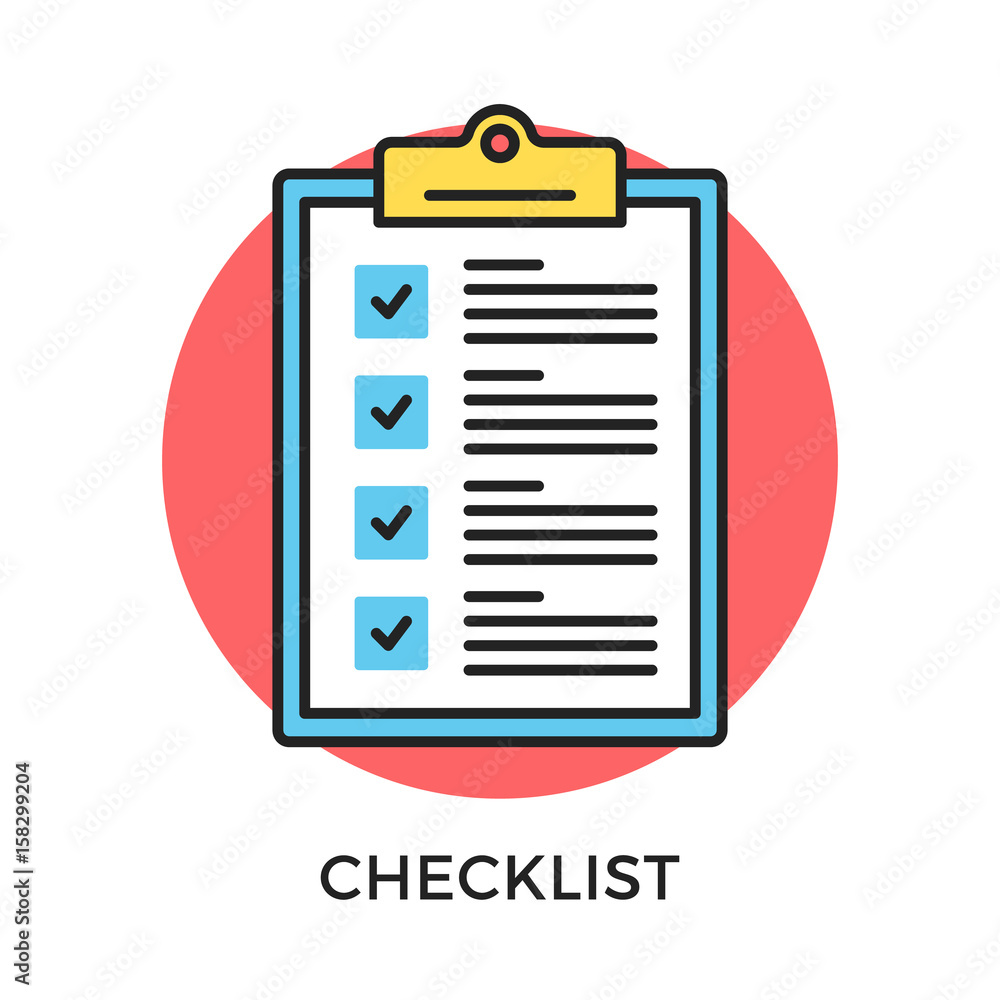

The Myers Brigg Test shows that I have a meditator personality. My learning style test from the education planner site said that I am most likely and auditory learner. Meditators often make people happy, and this would be a great influence in teamwork situations. It will help keep the team positive to become more motivated to reach goals. The creativity in a mediator’s personality would be useful as they can think of different solutions that suit different people. My weakness as a mediator would be unfocused and this can affect the team in a bad way as it can put them behind. Although auditors learn fast while listening, they can get distracted easily. Auditory learners getting distracted easily can disrupt performance results. The big five personality test showed that agreeableness was my highest personality trait, and this shows that I am less competitive. The big five personality test also said that my self-discipline was low and that my conscientious level was low. When forming a team, I should take into consideration commitment rates as I would need someone to discipline my team to not fall behind. I would also need to take into consideration the goals for the team to ensure that they are achievable in a reasonable amount of time. I would also need to take into consideration the work environment as I will be unfocused if it gets too noisy. A quiet office in a less populated area would be the most suitable for me and it will help me build my self- discipline. I would need to improve this by keeping a task checklist with completion dates on this for the future.
